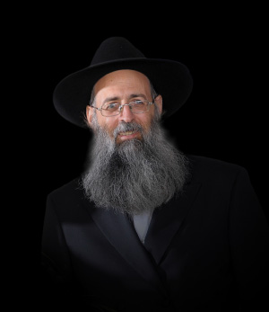

“Shalom from Beit Shaan”
It was with these words that R’ Yaakov Shmuelevitz a”h would introduce himself when he made a phone call. Not his name, but the place where he served as the shliach, because that was his essence. * The life story of R’ Yaakov Shmuelevitz, an outstanding person, Chassid and shliach. He was an exemplary father, a man of action and an unforgettable friend.

A NEW PATH
R’ Yaakov Shmuelevitz was born in Belgium on 28 Teves 5724 to Kalman and Rochel Shmuelevitz. When he was four the family moved to Eretz Yisroel. In his youth he was sent to learn in Yeshivas Itri in Yerushalayim. It was there that he discovered Chassidus upon attending the secret Tanya shiur given by R’ Berel Shur a”h.
He went to the shiur after a debate about Chabad with some friends in the yeshiva dining room. One of them, who had some connection to Chabad, suggested to one of the others that he learn Tanya. To the surprise of the others, it was young Yaakov who was sitting on the side who got up and said, “I’m interested in learning Tanya.” The one who made the offer said, “Fine, I will arrange a chavrusa for you.”
He later learned that one of the bachurim involved in the debate was the leader of the Chassidic underground in the yeshiva. His name was Dovid Kramer and he was the one who began learning Tanya with Yaakov. “At this point I had no idea what kind of course and challenges I was getting myself into … I only wanted to learn Tanya, but that led to changes that affected my entire life,” Yaakov later related. He soon began attending the Tanya shiur that was given every week in a different location.
In the Litvishe yeshiva world there was strong opposition toward Chabad. R’ Shur and his talmidim were mocked and sometimes even had tomatoes thrown at them. The electricity was cut off more than once, but that only served to solidify the group.
“The weekly Tanya shiur took place in an atmosphere of fear, wariness and secretiveness. It was given in a different location each time. The fact that it was like ‘stolen waters which are sweet’ gave it a magical flavor. We had to learn quietly so we wouldn’t be heard. R’ Shur spoke quietly, with a slight American – slight Russian accent. It was like something from another world,” reminisced R’ Shmuelevitz.
R’ Yaakov eventually became “sold” on Chassidus Chabad and slowly began changing his customs until he became a Chabad Chassid in every way, even as he continued learning in a Litvishe yeshiva. He began immersing every morning before davening, even though the yeshiva did not designate time for this and the mikva wasn’t nearby.
“It is hard to describe the enthusiasm with which we would run to the makeshift mikva in the Arab village of Beit Tzfafa near the yeshiva.” He also changed his Nusach HaT’filla to Nusach Chabad. He put a Chabad Siddur into the binding of his Nusach Sefard Siddur so nobody would notice the changes he was making.
With time, his connection with the Rebbe grew. It started with his leaving yeshiva to go and see a film of the Rebbe that was being shown in Yerushalayim. Then he began going on mivtzaim on Fridays. Most importantly, he wrote to the Rebbe.
One day, his father found out that his son was forging a new path for himself. When he asked his son about this, Yaakov stammered that yes, he had chosen the path of Chabad. His father was shocked. He was a talmid chochom and had a lot of experience in chinuch. He told his son to write to the Rebbe that he was going against the ways of his fathers, “and let us see what the Rebbe will tell you.” In the end, his entire family became Lubavitch.
In light of the many difficulties he went through, he often davened to Hashem, pleading to be shown the right path and that he pass all the tests easily. As the months and years went by, his tears changed, from tears of pleading to be given clarity, to tears of joy and bitachon and thanks.
“When I look back, twenty-five years later, I sometimes miss those days. I remember them as happy times in which I went with complete faith on the new path I had discovered, the path of Chassidus. But those days weren’t at all easy,” he said.
At a certain point, he felt ready to switch to a Chabad yeshiva, even though his parents and the yeshiva he attended were opposed to this move. After writing to the Rebbe, he received this answer: The necessity to learn Chassidus nowadays is brought at length in kuntres Eitz HaChayim and in other places.
His wish was fulfilled and in 5740 he went to learn in Yeshivas Tomchei T’mimim in Kfar Chabad. A new chapter began in his life as a Tamim and Chassid.
His friend, R’ Moshe Marinovsky, remembers him well from the time he entered yeshiva. He wrote after R’ Shmuelevitz’s passing:
“I noticed a tall bachur whose body language conveyed confidence and vitality. His peios were behind his ears like many in the Litvishe world and he wore a gartel. I found out that the Litvishe look came from his attending Yeshivas Itri for high school. The external Chassidic signs were something personal or from his family but beyond his outward appearance he had a glowing p’nimius.
“It didn’t take long before it became clear that he and his friends who came with him from the Litvishe yeshiva had become acclimated to the unique atmosphere of the yeshiva, absorbing and internalizing the values of Chassidus and hiskashrus to the Rebbe, no less than those with a Chassidic background and, if the truth be told, in many ways more than them. Among them, our dear friend R’ Yaakov Shmuelevitz stood out. He stood out not only physically but also spiritually. He quickly became a Tamim with everything that the title implies. He was first and foremost in everything having to do with Chassidishkait and hiskashrus.”
In 5744, he went for a year on K’vutza to 770 and from that year spent with the Rebbe, he derived the strength for the rest of his life. Like in yeshiva in Kfar Chabad, in 770 too he very quickly “got with the program.” There is no need to say that being “with the program” means in an inner sense, i.e. the maamarim and sichos, the practices and everything going on in 770 at every moment. He also wrote a detailed diary. Yomanim from Beis Chayeinu appeared based on his notes and at the end of his year they also served as the basis for the book Rishuma shel Shana b’Beis Chayeinu.
BEIT SHAAN ON THE MAP
That year, when he was on K’vutza, the Rebbe spoke a lot about going on shlichus and preparing the world to welcome Moshiach. As a bachur, Yaakov committed, on Simchas Torah 5744, to going on shlichus.
“In my year on K’vutza, 5744, the Rebbe spoke a lot about the z’chus of going on shlichus,” he said in an interview with Beis Moshiach. “It was obvious to me that after I married I was going on shlichus. About a year after K’vutza, I saw an ad that said they were looking for a shliach to Beit Shaan. That sounded right to me; far enough from the center of the country to do shlichus.”
There were two brothers named Segal from Afula, who were overseeing the outreach activities in Beit Shaan at the time. R’ Yaakov told them that he was interested in the place and they should wait until he found a shidduch and got married. They were happy to hear he was interested but said they wouldn’t wait. If someone else came along they would accept him with open arms.
In the meantime, he finished learning for smicha and became engaged to Chana Lisson of Kfar Chabad. As soon as they became engaged, the couple wrote to the Rebbe, saying they want to go on shlichus. The letter presented some options including learning in kollel. The Rebbe’s answer came a few days later. He circled Beit Shaan and added: I will mention it at the gravesite. May it be in a good and successful time with expansive gashmius and ruchnius.
At the beginning of Kislev 5746, only three weeks after their wedding, they went to Beit Shaan on shlichus. Beit Shaan was a small town at the time; today it is a city with 20,000 people.
R’ Shmuelevitz was the most recognizable person in Beit Shaan. He and Beit Shaan were one entity. When he called a friend he would say, “Beit Shaan here.” If you said Beit Shaan, you said Yaakov Shmuelevitz. Not surprisingly, every man and woman and even the children of Beit Shaan knew “HaRav Yaakov’s” house.
“I was infused with the air of shlichus and my wife too, a young bride, had always been educated with an authentic Chassidic education. When she saw a dynamic, enthusiastic chassan, she was willing to go on a journey that began and will continue until the hisgalus of the Rebbe Melech HaMoshiach.”
Beit Shaan in those days was nothing like it is today, whether in population or spirituality:
“We had to get bread with a mehudar hechsher from far away,” he said. “During Shmita, which coincided with the second year after our arrival, we had to get fruits and vegetables from the center of the country. Of course there was no Chabad minyan. Even mikva every morning was a dream.”
R’ Shmuelevitz wasn’t fazed by any of this. On the contrary, this is the reason he had gone to Beit Shaan. While dealing with the material challenges, he began to make the spiritual desert bloom. He started with shiurim. He would go out to the street and ask passersby to join a shiur that he gave in his house or in shul. He began visiting schools and speaking to the students. Before long, he was very busy.
The first public event he did was a Tzivos Hashem rally for children before Shavuos. He met with the director of the culture/youth/sports center and asked to rent an auditorium with 800 seats. The director began to laugh and he said, “At our events, we barely manage to get 200 kids. Why would you want to waste money in the hopes of getting 800?”
The director did not yet know that R’ Shmuelevitz was made of different stuff, the stuff of shluchim. He insisted on making a big event and announced raffles, gave out flyers, and drove around Beit Shaan with a loudspeaker and invited the children to the event.
When the event began, he himself did not believe the turnout. The auditorium was jam-packed. The 800 seats filled up quickly and the aisles were packed with children. “A few minutes after the event began I was told that the director was waiting outside with his two children. He had come a little late and he couldn’t get in!” Afterward, he went over to R’ Shmuelevitz and exclaimed, “I don’t understand how a youngster like you, who is in Beit Shaan for just a few months, managed to fill the auditorium, something which nobody else in Beit Shaan has been able to do.”
R’ Shmuelevitz said, “It is not me who is the secret of success, but the one who sent me, the Rebbe of Lubavitch.”
Settling in wasn’t easy. The couple did not yet own a car and every trip to the center of the country meant traveling by bus for four hours. Still, they were happy to be shluchim.
If you knew R’ Shmuelevitz, you know that when he walked on the main street of Beit Shaan you could not ignore his presence. He was tall and his bass voice could be heard from one end of the street to the other. His hearty laugh could even draw the attention of drivers ensconced in their cars.
All this was beside the fact that in those early years, a Jew dressed like him was definitely an anomaly on the streets of Beit Shaan. People stopped him and asked him for help in checking mezuzos and would ask him questions in kashrus and more. Not only adults knew him; all the children knew him too. They called him “HaRav Yaakov of Chabad,” and he always responded.
The shiurim that he began giving in schools eventually turned him into the official rabbi of three public elementary schools in Beit Shaan.
“In every classroom I give a weekly lesson for half an hour. Over 1200 children learn about Judaism and Chassidus every week. I visit the four other schools and preschools before holidays and on other occasions like a Chumash party, bar mitzva celebration, etc.” He did this until the final period of his life. Despite his great weakness, he would muster the last of his strength and go to the schools. He considered this one of the most important roles he filled.
Over the years, he became someone who was invited to every event, big and small, in Beit Shaan, to weddings and bar mitzvahs as well as yahrtzaits and funerals. In every situation he inspired the participants with the divrei Torah that he always had on the tip of his tongue. His personality drew many people who wanted to consult with him. Naturally, he had many students.
When he was once asked to explain his success, he said, “With each one I walk hand in hand, with lots of attention and a lot of work, until he becomes a Chassid. That is the secret to my success in being mekarev people to Judaism and Chassidus.”
R’ Shmuelevitz did not get comfortable in his shlichus, but over the years expanded his outreach to include the numerous kibbutzim around Beit Shaan. He broke the barriers of estrangement that had existed and separated people for decades. He also reached out to the many army bases scattered in the area. He visited them on holidays and other times. Wherever he went he would draw in the soldiers or the kibbutznikim; it was impossible not to listen to him.
EVEN HIS ENEMIES
BECAME HIS FRIENDS
R’ Shmuelevitz experienced difficulties in his shlichus, including battles against those who tried making problems for him. But he was never intimidated.
“From the day I went to ‘cheider’ (the Chabad yeshiva in Tzfas), and even before that (in the yeshiva in Kfar Chabad and the Litvishe yeshiva), a way of thinking started forming in my mind and I gained experience that proved that there is no point to debating Misnagdim. In a debate, each side digs in its heels and this only intensifies the triumphalism and enmity against the other side. It does not convince anyone and is not effective,” he wrote.
“What is convincing? Listening to the other person. Let him say everything he thinks. Be strong enough in your faith and your path, be ready to absorb and to listen even to denigrating remarks … When he finishes expressing his view and complaints, he will become calm. Now, try in a calm, organized way to get him to hear what he needs to hear. It is possible that he will shout some more complaints and denigrating remarks. No matter. Listen to him and let him let off steam. Then let him hear, in a calm, organized way, what he needs to hear. It works and it’s been tested.”
R’ Shmuelevitz was someone many shluchim turned to for advice on how to break through the walls of estrangement and apathy. He was alert to the difficulties that many of his fellow shluchim had to contend with, and this is why he started his column in Beis Moshiach called “Stories from the Chabad House.” In his introductory column he wrote, “My goal is to benefit my fellow shluchim and the rest of Anash so they can utilize the tips and ideas, each in his own shlichus. This series will be comprised of stories of hashgacha pratis, siyata d’Shmaya, and some creative ideas about how to handle problems on shlichus, dilemmas, and even hardships and opposition; all with real-life stories.
“Whenever we encounter a problem that interferes with our shlichus, we must remember that we are promised, ‘Chassidim will come out on top.’ But we need heavenly assistance in order to decide and find the right approach to solve the problem and perhaps, to turn it into something positive, blessing and success.”
R’ and Mrs. Shmuelevitz’s thirteen children were born in their place of shlichus. Their children grew up (some are still growing up) on shlichus as shluchim themselves. Much more can be written about R’ Yaakov’s work in Beit Shaan, about his turning it into a place of Torah and Chassidus. This is one of numerous examples:
When he first went to Beit Shaan, he wanted to immerse in the morning but there was no open mikva. “The people on the religious city council were happy to hear that a Lubavitcher shliach had come. As thrilled as they were, they made it clear that ‘in our city there is no such thing.’ The mikva for men was open only on Friday afternoon.”
R’ Shmuelevitz got them to hold a special meeting to discuss the matter. They finally agreed that he would get his own key, just for him. Eventually, other people joined him until the religious council found out and changed the locks. After a period of negotiations, he was given a key once more with the stern warning not to let others in. But once again, other people joined him and the key was taken away. The matter was sent for review higher up the bureaucratic chain until finally the mikva was officially opened every morning.
Today, three mikvaos are opened every morning and they are, Boruch Hashem, all busy. Dozens of Anash, residents of Beit Shaan and mekuravim immerse every morning in one of these mikvaos. As R’ Shmuelevitz put it, “By now there is a ticket from the council for the regulars, there are keys, there’s an attendant, and there is the Beit Shaan Valley which is ready, in purity and with joy, to welcome Moshiach now!”
For seventeen years, the Shmuelevitz family was the only Lubavitcher family in Beit Shaan. Every Shabbos, every Yom Tov, for every farbrengen, they were on their own. “I remember that when guests, Lubavitchers, came for an ordinary breakfast, we were so happy that we said, ‘Shir HaMaalos.’”
Over the years, the shlichus expanded with the arrival of two families of shluchim, the families of R’ Shmuel Reinitz and R’ Roi Tor.
“When you see forty-fifty people at Shacharis on a weekday, sitting and standing in every possible place, and when you recall that just two years earlier we would often stand outside the Chabad house and look for a tenth man for a minyan (and sometimes we looked for a sixth and a seventh …), it’s definitely a feeling of nachas.”
The shlichus in Beit Shaan today includes a busy Chabad shul and additional families of shluchim who are doing wonderful work and preparing Beit Shaan for the hisgalus of the Rebbe MH”M, the greatest wish of the shliach who led the shlichus here for nearly three decades.
RABBI SHMUELEVITZ’S COLUMN
R’ Shmuelevitz wrote a weekly column for us for five years. It started a bit hesitantly with five chapters describing his years as a young bachur in Yeshivas Itri. Upon receiving enthusiastic feedback, he continued the column with a theme of “Dilemmas” in which he presented dilemmas from life on shlichus in story form. At first, they were dilemmas and solutions from his life on shlichus but it slowly expanded to include stories that other shluchim shared with him.
At a later stage, his column began with an idea from the weekly D’var Malchus which he used as a launching point for stories on that theme from life on shlichus. He put a lot of work into his articles and his column covered numerous topics that come up in a life on shlichus: putting on t’fillin with others, the power of a Chassidic niggun, Ahavas Yisroel, help with parnasa, going to the Rebbe, preparing for Yom Tov, speeches, we are ‘day workers,’ ‘my piece of bread,’ hiskashrus to the Rebbe, Talmud Torah is equal to everything else, a shliach’s cheshbon nefesh, ‘do all that you can,’ miracles, a descent for the sake of an ascent, bittul, and more. He wrote over 200 columns over the years.
His column sprang from his broad and optimistic soul and they were infused with this spirit. From his articles you could hear his loud voice and the accompanying smile that was always present when he spoke. That was his style.
When he finished his series he thanked his readers for the privilege:
“Thanks to Hashem and thanks to the Rebbe who gave me the privilege of leaving where I was and reaching the light of Chassidus. Today, boruch Hashem, all my children learn in Chabad schools and I pray to Hashem that they all succeed and continue on this good and fortunate path. May we soon, with all Am Yisroel, merit the coming of Moshiach by spreading the wellsprings of Chassidus. May the Rebbe be revealed and redeem us immediately.”
BESURAS HA’GEULA
The Besuras Ha’Geula and publicizing the identity of Moshiach were an inseparable part of R’ Shmuelevitz’s shlichus. There is a huge picture of the Rebbe with “Yechi” on it in the yard of his home. This sign is present at every event the Chabad house does. The proclamation of Yechi begins and ends every Chabad event. He tried to connect every speech he gave to Moshiach and Geula.
“Everyone in Beit Shaan knows that Chabad proclaims that the Rebbe is Moshiach. They all accept this matter-of-factly. Every day, many people come to us,” said R’ Shmuelevitz, “asking to write to the Rebbe through the Igros Kodesh. There are amazing answers and miracles.”
He also publicized the identity of Moshiach in the shiurim that he gave, at the Chabad shul, at Yemei Iyun, etc. At a certain point, he even distributed the book Ata Yodaati which explains about the Rebbe being Moshiach. He also gave it as a gift to hundreds of children who attended the Chabad day camp so that several hundred more families would benefit from this book.
R’ Shmuelevitz did research on the views of the counselors who came to run his day camp so that the children would be infused with the inyan of Geula. “The counselors laugh about my checking them out like one does for a shidduch. This is because I want them to be Chassidiyos permeated with the inyan of Moshiach,” he said unapologetically.
THE ILLNESS – LIKE GALUS
In 5771, he was diagnosed with cancer. As was his way, he waged the battle for his life with complete openness, humor and repartee that were characteristic of him. He even shared it with his friends, relatives and readers of Beis Moshiach by stating, “On a personal note, I would like to share with the readers of Beis Moshiach a calamity that I’ve gone through this past year,” but as always, he continued on a hopeful note. “But in hindsight, many points of comfort can be found even within this calamity.”
He went on to describe his handling of his illness, his remission (at that time), the ups and downs, the prayers and his supportive friends and family.
“When the disease was discovered in my body, I knew the time had come to use all the tools I had been given and learned in life. One of the tools is: if you are afraid of something terrifying, ask yourself what is the worst case scenario. Then you will see that even that is not unbearable. I remember that Friday night meal when twenty of my descendants sat around my table. I poured mashke for the boys, raised my cup, and said l’chaim to my wife. ‘With Hashem’s help, everything will be okay and I will soon be healthy.’
“Some tears were surreptitiously wiped there, around the Shabbos table. But that was the situation at the time, a cursed disease along with great hope for a complete recovery.”
A shliach is a shliach and he uses his abilities as a shliach in every circumstance, even a difficult one, in order to bolster his health in the proper manner: “We did not suffice with tears and saying l’chaim, but used all our connections with schools in Beit Shaan. We spoke to all the principals and asked them to speed up Hashem’s bracha for healing, to check all the mezuzos in the schools. My wife ran this campaign. While I went to the operating room, she continued receiving data from all the principals about the results of checking the mezuzos.
“One large school gave in 100 mezuzos to be checked, fifty of which were kosher. The rest were changed for new mezuzos. The other schools also acceded to our request and within a few days, about 550 mezuzos were checked.
“Even when we went to the hospital and had to wait several hours for the surgery, my wife and I went around the department and did the Rebbe’s mivtzaim. I suggested that the men put on t’fillin and my wife wrote to the Rebbe with the women. There was an older man who had had some toes amputated and was hospitalized for some treatment. After I put t’fillin on with him, he wanted to buy new ones. I asked him whether he would still be there in another four days and he said, ‘Yes. The doctor said it would take at least a week.’ Two hours later I saw him dressed and on his way out. I asked him what happened and he said that the doctor had come and seen that his foot was fine and had released him. He did not even understand what I was marveling about, ‘since you were the one who put t’fillin on with me,’ he said simply.
“Another man lay there comatose. His daughter, who sat at his side, told us that he had undergone an operation a week ago. He had recovered nicely but then suddenly had a stroke and had been in a coma ever since. I put t’fillin on him and his wife wrote to the Rebbe asking for a bracha. Two hours later, his daughter came running to us and exclaimed, ‘Come and see my father! He opened his eyes and is talking to us!’ Many other relatives showed up who had heard about the amazing turn of events. They all spoke about the ‘angels’ who revived him.
“Hundreds of residents of Beit Shaan (and elsewhere) rent the heavens with their prayers and good hachlatos. As the weeks and months went by, we heard from more and more Jews who davened for me in shuls, schools, preschools, homes, at the Kosel, in Miron, where not? New shiurim were started and the T’hillim was divided to be completed every day.”
R’ Shmuelevitz endured the chemotherapy and other treatments which he handled bravely. Even on very hard days he did all he could to continue running the programs and if possible, he showed up.
“I discovered strengths I did not know I had. Sometimes I returned to Beit Shaan after a day of treatment and immediately went to give the usual shiurim, sometimes two or three a night and only afterward went home to sleep. There were people at the shiurim who nervously asked one another about why my face was yellow, but the shiurim generally went on as usual.
“The treatments that followed were relatively easier. I knew from experience that the difficult side effects lasted a few days and then passed. I also knew that as ill as I would feel, there was nothing to be done about it and it was part of the curative process. I thought how this is the closest example we have to the difficult galus that is all intended for the sake of Geula. At the same time though, we cry out: Enough of galus! Enough of painful cures! Please Hashem, bring the Geula.”
There were times that R’ Shmuelevitz slipped out of his hospital room in order to give shiurim that were close to his heart.
During the three years since he was diagnosed, he opened to many answers in the Igros Kodesh full of instructions and encouragement. His doctors were always amazed by this man who was active despite not operating at full strength. There were times they looked from the test results on the papers in front of them to the patient and wondered whether there wasn’t some mistake. For according to the test results, the man before them should have been someplace else … Those were three years of open miracles.
He continued to weaken and at the Kinus HaShluchim this year his name was mentioned, with great love and admiration, for a refua shleima. Everyone was aware of his critical state and yet, his passing was a shock. He was a model of Chassidus, of uncompromising hiskashrus, of tireless shlichus, and all these things are synonymous with life, chayus, and vitality.
The shock is great, the pain is endless, and the loss is great. There is no question that R’ Yaakov Shmuelevitz will continue to be a beacon of light and Chassidishe chayus to his dear family, the residents of Beit Shaan, and to the very many friends and acquaintances who loved him so much.
Menachem Ziegelboim. "“Shalom from Beit Shaan”." Beis Moshiach, no. 913 (January 30, 2014).